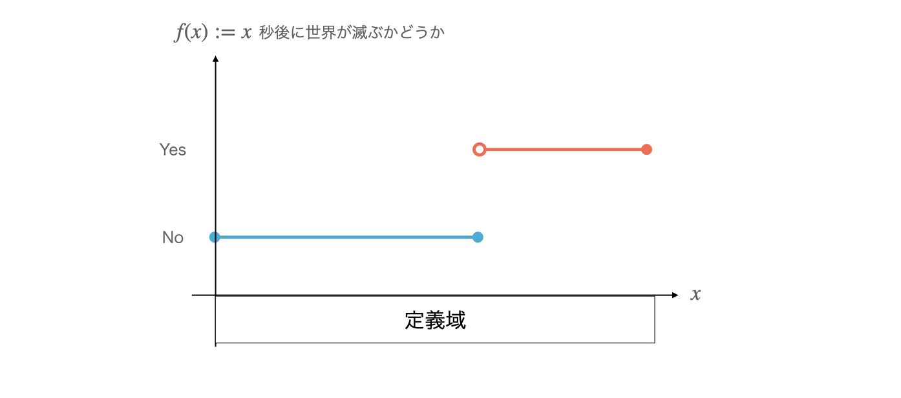
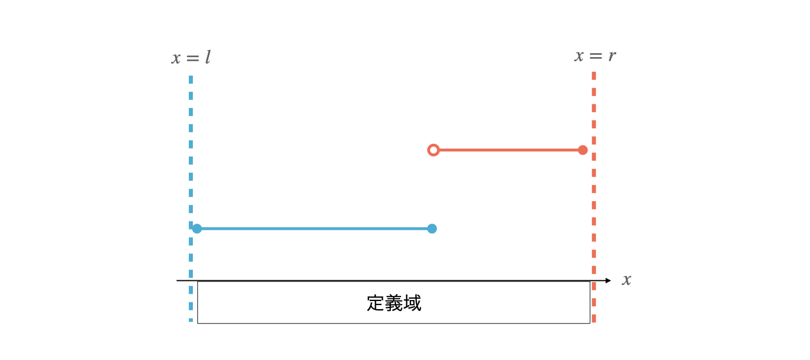
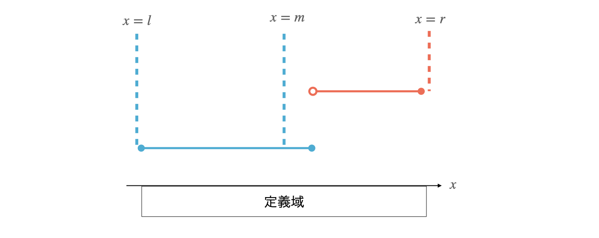
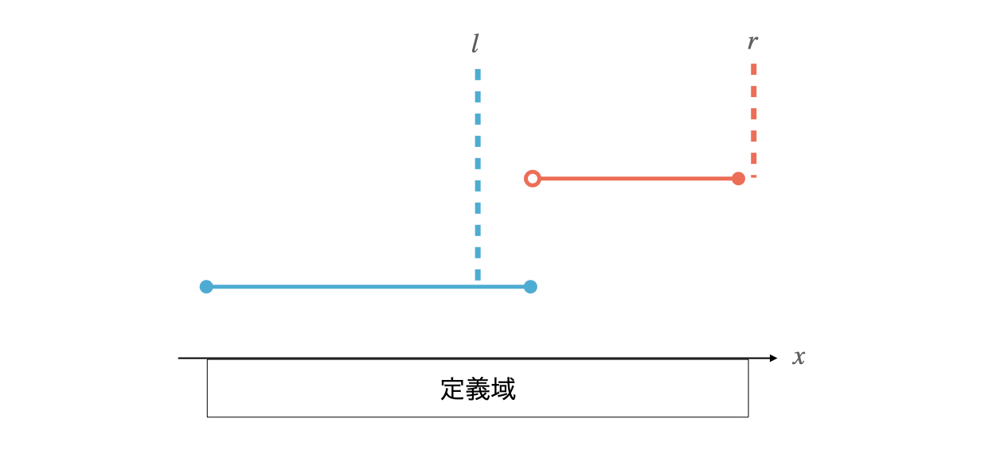
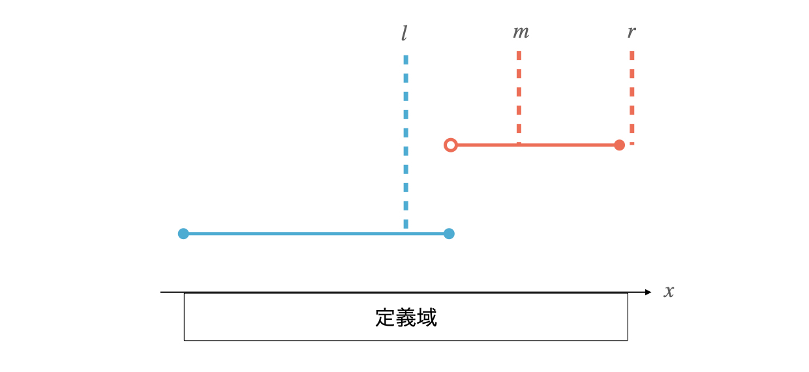
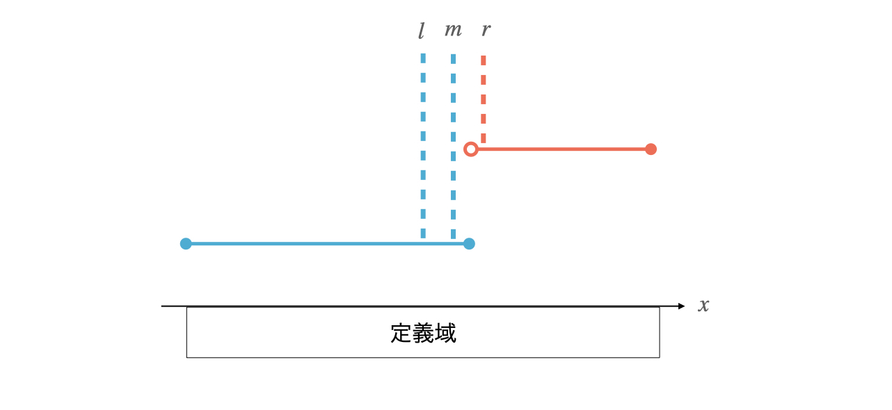
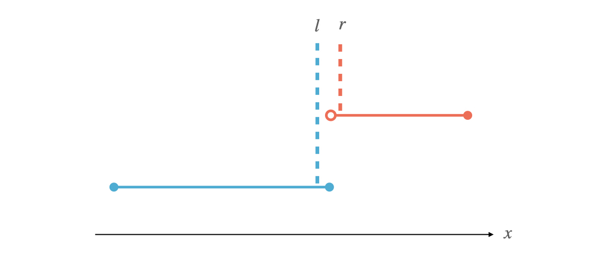

これを知らないと競プロできません。二分探索の基本的なアイデアは、単調な対象 \(F_x\) (数列なり関数なり) が、ある条件を満たす区間と、満たさない区間に \(2\) 分割される \(x\) の境界を探索することです。
例えば以下のような単調な関数 \(f\) を考えてみましょう。
Yes/No で返す。
Yes となる領域であり、他方は必ず \(f(x) = \) No となる領域です。

\(f\) の引数と同じ型の変数 \(l,r\) を用意します。\(l,r\) は常に以下を満たすものとして定義します。
\(l,r\) の初期値は \(f(l)\neq f(r)\) を満たすように決める必要があります。\(x\) の定義域の両端を \(l,r\) とすればよいと思うかもしれませんが、\(x\) の定義域内に境界が存在しない場合もあります。その場合は境界なしと答えれば良いのですが、その他の場合との結果と一貫性を持たせるために、\(l,r\) を以下のようにします。
Yes/No を \(f\) と矛盾しないよう (若干例外的でも良い) に割り振る。
ここから、二分探索の手順に従って \(l,r\) の間隔を狭めていきます。

\(f(l) == f(m)\) なので、左端を \(m\) の場所まで狭めます。


\(f(r) == f(m)\) なので、右端を \(m\) の場所まで狭めます。


このようにして、最終的に \(f\) を \(2\) 分割する \(x\) 座標の境界がもとまりました。毎回区間 \([l,r]\) の中間で分割を行うので、計算量は \(O((f の計算量)\cdot \log{(定義域の幅)})\) 時間です。
境界がわかります(それはそう)。今回の例では、最終的な \(r\) を見ると世界が何秒後に滅ぶかがわかり、最終的な \(l\) を見ると世界が後何秒存続するかがわかります。